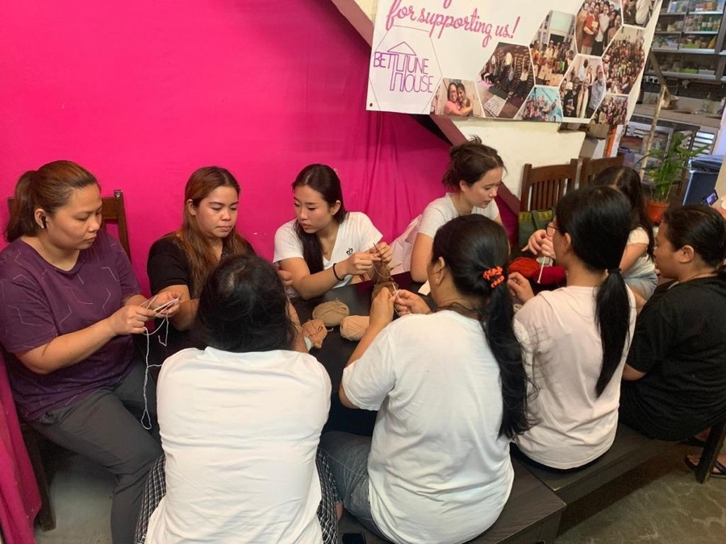
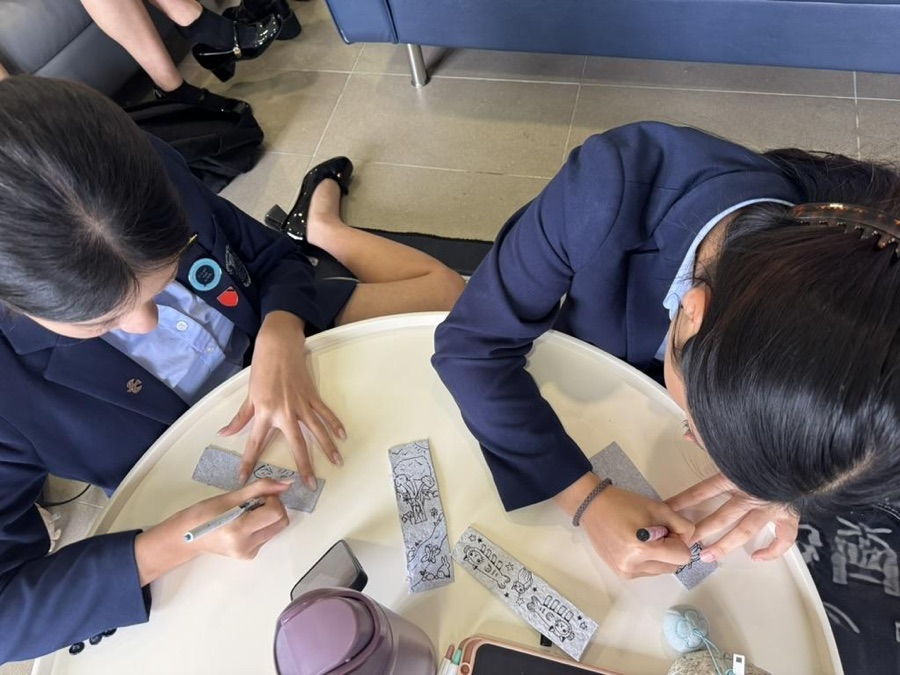
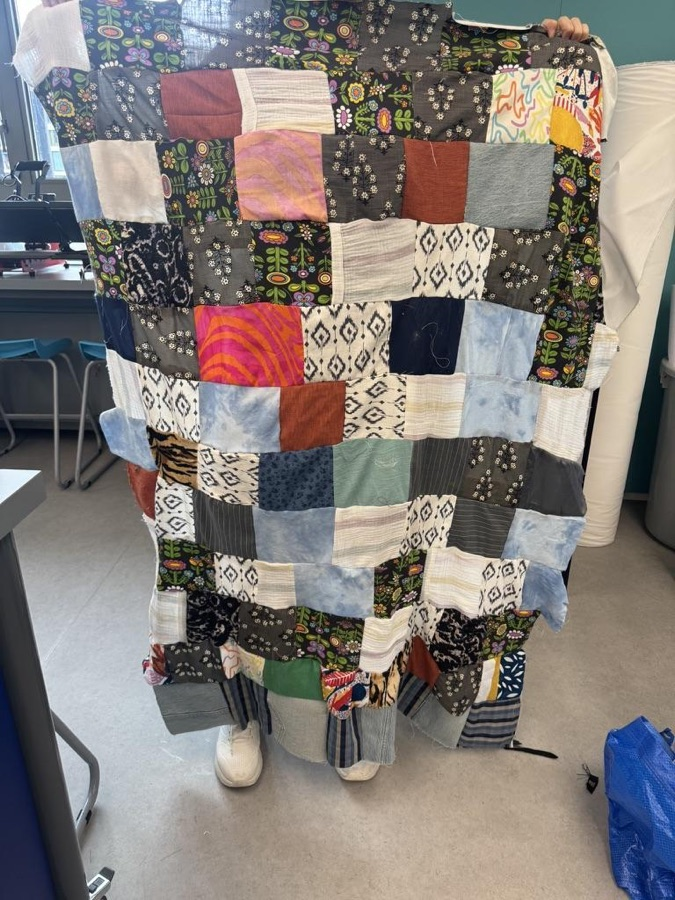
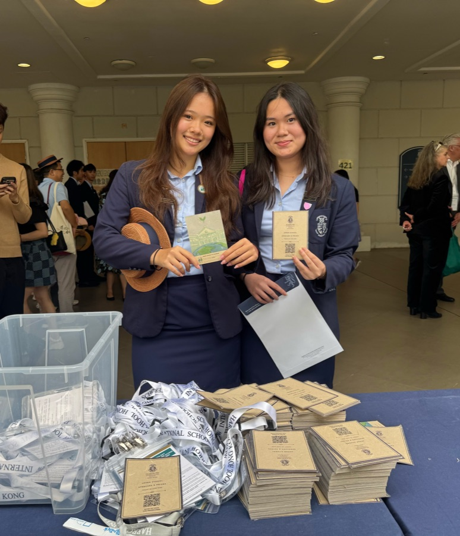
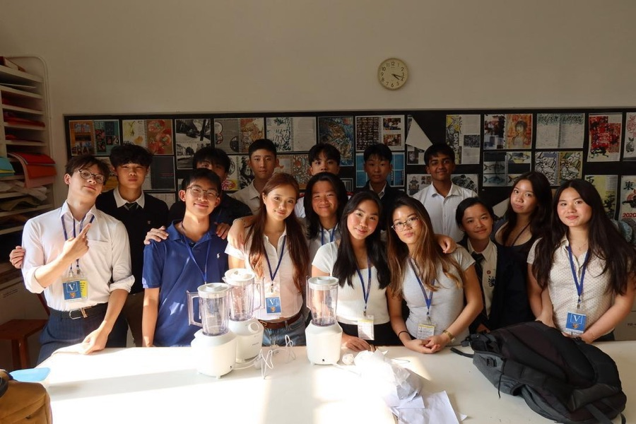

/01Bethune House Knitting Workshop
Knitting with reclaimed yarn alongside the Bethune House community.
Add a reflection →Turning textile waste into community impact

/01Knitting with reclaimed yarn alongside the Bethune House community.
Add a reflection →
/02Handmade bookmarks crafted from our own recycled eco-paper.
Add a reflection →
/03Turning discarded textiles into warm blankets for those in need.
Add a reflection →
/04Programmes for our school's Speech Day printed on Refyber eco-paper.
Add a reflection →
/05Hands-on eco-paper workshop hosted at King George V School.
Add a reflection →Follow these steps to create beautiful, sustainable paper from textile waste.
Collect textile waste and cut into small pieces
Soak the textile pieces in water overnight
Blend the soaked textiles with recycled paper into a pulp
Pour the pulp onto a mesh screen and spread evenly
Press out excess water and add decorative elements
Let dry completely and peel off the finished eco-paper
Fill in the details below and the project appears as a new card underneath. Saved in your own browser only.
Share what this project meant to you. Reflections and photos are saved in your own browser only.